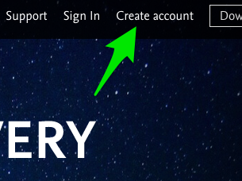
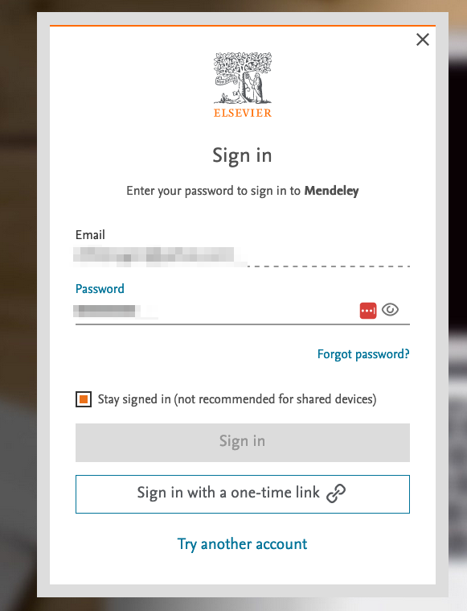
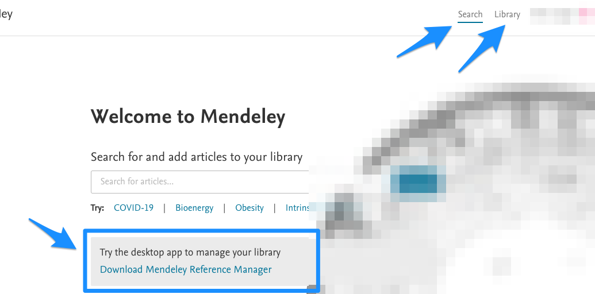
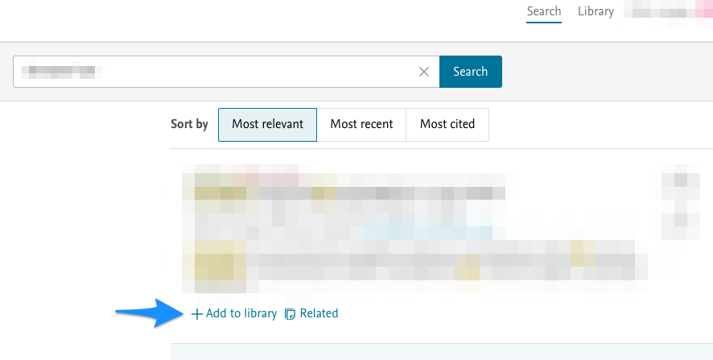
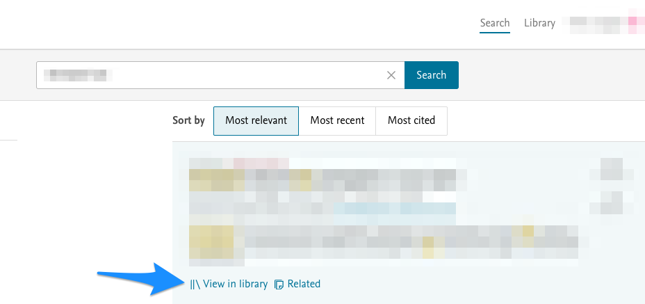
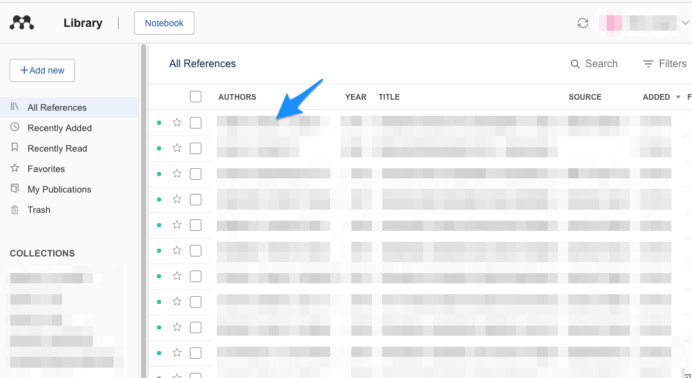
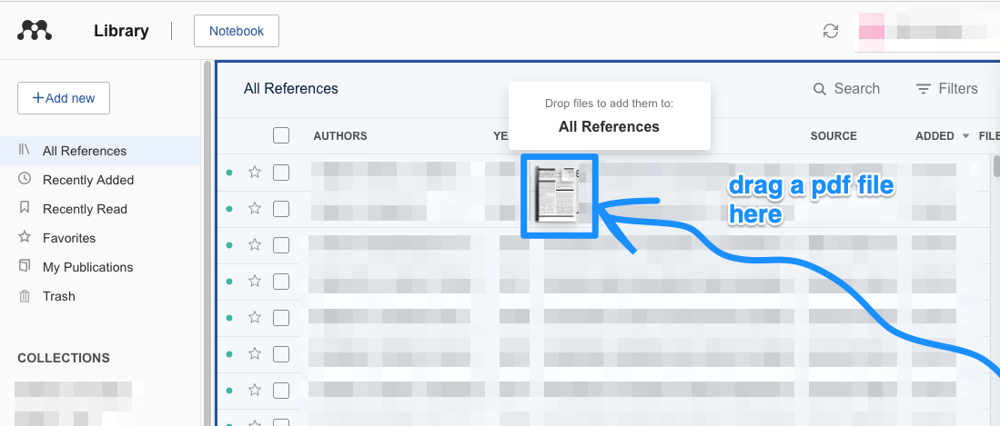
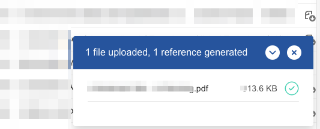
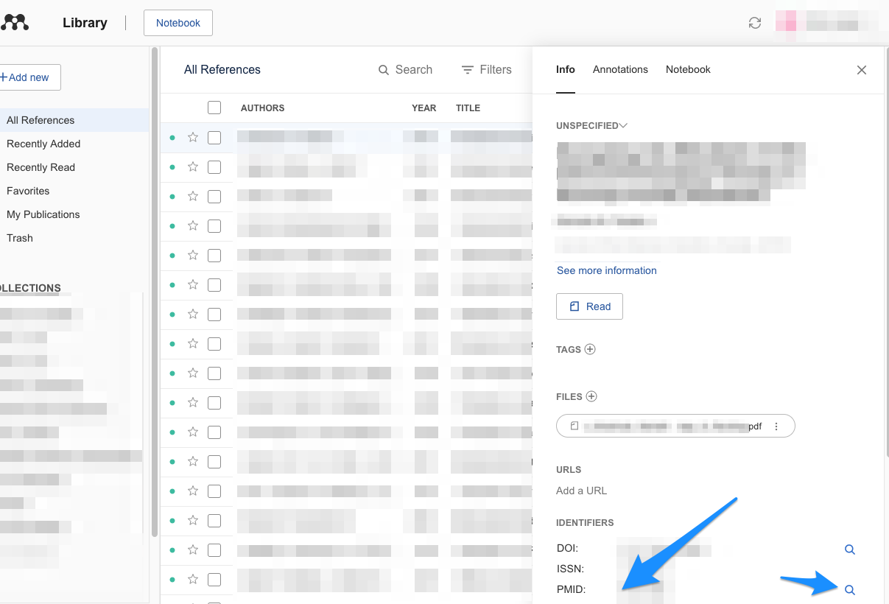

4 Mendeleyn käyttö
Mendeleytä pystyy periaatteessa käyttämään täysin web-selaimen kanssa, ilman erillistä desktop-sovelluksen asennusta. Tämä voi olla joskus ainoa mahdollinen metodi, jos esim. työpaikan koneelle ei ole lupaa asentaa desktop-sovelluksia.
Alla nopea ohje, jolla pääsee Mendeleyn web-version käytössä alkuun.
- Googleta “mendeley” tai klikkaa alla näkyvään linkkiin:
- Klikkaa “Sign In”, jos sinulla on jo Mendeleyn käyttäjätunnus; jos ei vielä ole, luo sellainen klikkaamalla “Create account”:

- Joissakin tilanteissa, joissa olen yrittänyt sisäänkirjautua kohdasta “Sign In”, on pitänyt olla VPN-yhteys muodostettuna yliopistoon ja on pitänyt valita kohta “Sign in via your institution”, jotta pääsee eteenpäin. Välillä taas näin ei ole tarvinnut tehdä.
- Kun pääset kyseisestä kohdasta eteenpäin, joudut vielä vastaamaan tahdotko pysyä sisäänkirjautuneena (ks. kuva alla), vastaa tähän toiveesi mukaisesti.
- Saattaa olla, että kohta “Sign in” on harmaana, jolloin joudut sisäänkirjautumaan kohdasta “Sign in with a one-time link” - jos näin on, sisäänkirjautumiseen vaadittu linkki lähetetään sähköpostiisi:

- Kun onnistut sisäänkirjautumaan, tarjoutuu erilaisia vaihtoehtoja. Voit ladata tästä näkymästä itsellesi Mendeleyn desktop-softan, jos olet kiinnostunut käyttämään sitä. Tämän oppaan tarkoitus on kuitenkin esitellä Mendeleyn web-version käyttöä, joten esitellään kohtien “Search” ja “Library” käyttö:
Huom! Mendeley on julkaissut uuden viitteidenhallintaohjelmiston, jonka nimi on “Mendeley Reference Manager”. Tässä ohjesivustossani puhutaan useissa kohdissa vielä Mendeleyn vanhasta viitteidenhallintaohjelmistosta, jonka nimi on/oli “Mendeley Desktop”. Mendeley Desktop -ohjelmisto toiminee edelleen, mutta sen saatavuus on vaikeutunut. Kannattaa joko siirtyä käyttämään “Mendeley Reference Manageria” tai vaihtoehtoisesti esim. Zoteroa. Alla on esitelty Mendeleyn käyttöä kokonaan web-pohjaisesti.

Yllä näkyvässä kuvassa nuolella osoitetussa kohdassa siis näytetään, miten halutessaan voi ladata ja asentaa tietokoneelleen Mendeleyn ohjelmiston; nyt käsitteillä olevassa oppaan luvussa kuvataan, miten Mendeleytä voi käyttää web-pohjaisesti, ilman ohjelmiston asennusta.
Klikkaa kohtaan “Search” ja etsi jokin artikkeli (alla hakutulos sumennettu). Kun klikkaa kohtaan “Add to library”, haettu artikkeli on lisätty Mendeleyn henk.koht. kirjastoosi:

- Kys. klikkauksen jälkeen kys. teksti muuttuu muotoon “View in library”, voit klikata siihen:

- Kys. klikkaus siirtää sinut kirjastosi puolelle. Äsken lisätty artikkeli saattaa näkyä artikkelikokoelmassasi (alla sumennettuna) ylimpänä:

- Yksi kätevimmistä toiminnoista Mendeleyssä on seuraava. Voit raahata esim. PubMedin kautta löytämäsi ja lataamasi artikkeli-pdf:n suoraan kirjastosi päälle ja tiputtaa sen siihen, jolloin se lisätään automaattisesti kirjastoosi:

- Onnistuneen lisäyksen tuloksena näet oikeassa alalaidassa tämän jälkeen seuraavan tekstin:

- Uskomattominta on, että suurimmassa osassa tapauksista Mendeley on automaattisesti täydentänyt artikkelin oikeat tiedot (nimen, kirjoittajat jne.) kirjastoon. Toki ne on hyvä käydä varmistassa klikkaamalla kys. kirjastoon tuotuun artikkeliin. Tuolloin avautuu seuraava näkymä. Jos tiedot ovat pielessä, oma metodini on kirjoittaa PubMedistä haettu ID-koodi ja painaa suurennuslasia, jolloin tiedot korjaantuvat oikeiksi:

Mendeleyn kaikkein keskeisimmät toiminnot on nyt yllä esitelty. Seuraavassa luvussa opetellaan, miten saa tuotua tuotua Mendeleyn henk.koht. kirjastosta viitteitä Word-käsikirjoitukseen.
Lehtiartikkelien haku utu:n VPN-yhteydellä ja viitteidenhallinta by Ville Langén is licensed under CC BY-SA 4.0